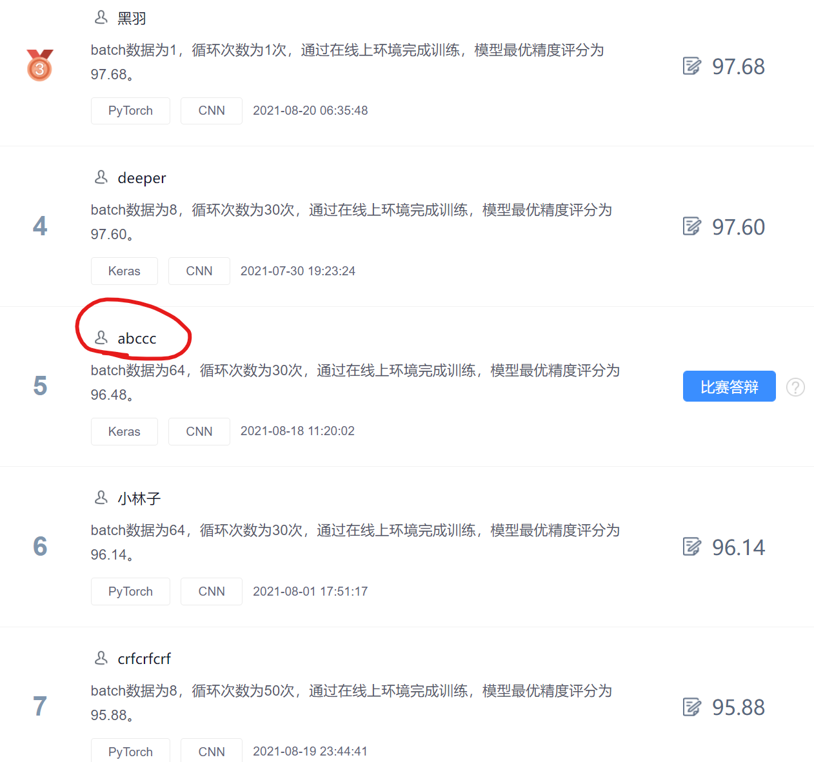
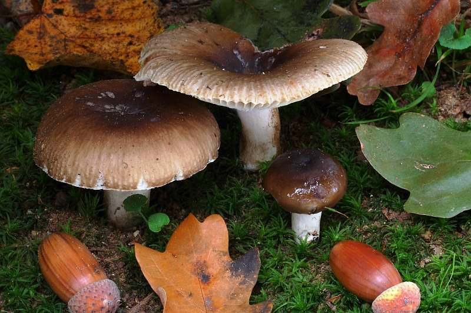
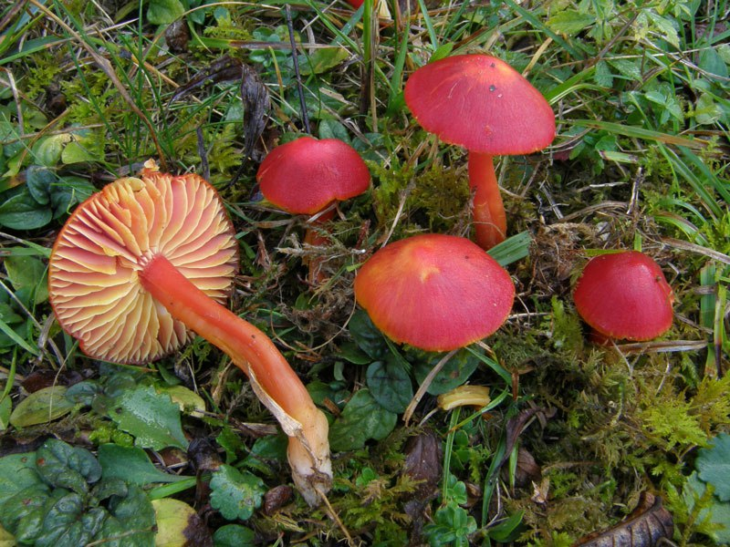
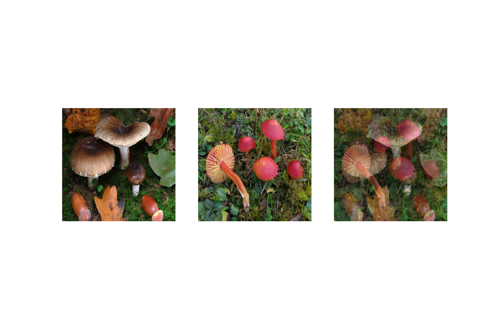
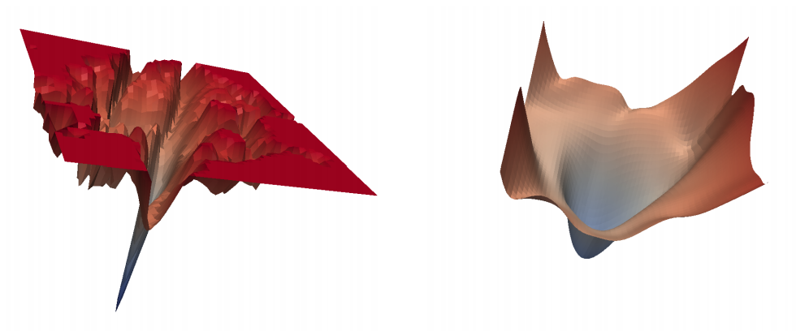
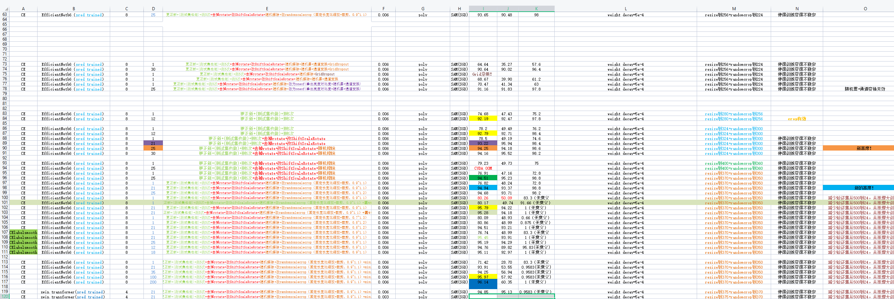

FlyAI蘑菇分类竞赛TOP5方案分享
入门深度学习至今已经一年了，趁着这个暑假参加了FlyAI举办的蘑菇分类竞赛，并侥幸取得了第5名。虽然之前也分享过类似竞赛的文章，但都是作为学习帖（传送门戳我），因此本文算是第一次正式参加机器学习类竞赛的浅薄经验分享帖，不足之处，欢迎指正。

赛题介绍
这里就不复制官方大段的赛事介绍了，只讲一下重点部分：
给定一批图片，其中共有9种不同品种的蘑菇，希望你用机器学习的方法训练一个分类器，使得该分类器能够将不同种类的蘑菇区分开来。


评估指标是准确率(Accuracy)，它定义为测试集中所有预测正确的样本数与实际总样本数之比。
图片被划分为训练集和测试集两部分。
和Kaggle等竞赛不同，这里我们是看不到测试数据的，并且只能看到训练集的很小部分数据。
官方提供训练平台，并有免费算力发放，因此不需要担心显卡的问题。
baseline搭建
官方已经定义好了数据的读取代码，并给出了基于PyTorch的baseline，所以并不需要我们从头去搭建baseline。
我们要做的，就是在这个baseline基础做优化，尽可能地去提升准确率指标。
模型优化
合适的骨干网络
骨干网络用于提取图片中的特征，并将特征送入分类器（一般是全连接层），输出预测的类别概率分布。
这里，我选择了EfficientNet B6作为骨干网络，理由见下图：
可以看出，EfficientNet系列无论是在参数量还是Top-1准确度上，都具备很大的优势。
而且这些骨干网络都会提供预训练模型，你可以直接加载使用，而不是从头开始去训练它。
事实上，在很多时候，我们都不会从头去做训练，因为这样做很容易因为数据量不足而导致模型不收敛等问题。
我们都站在巨人的肩膀上。
数据增强
数据增强起到了数据集扩充的作用，它对于分类器性能提升起了很大的作用。
通过多次实验，我选取了如下数据增强方式：
- RandomScaleCrop
- RandomErasing
- HorizontalFlip
- VerticalFlip
- ShiftScaleRotate
- RandomBrightnessContrast
- OneOf(GaussNoise, CLAHE,ImageCompression,RandomGamma,Posterize,Blur)
除了前面两个数据增强方法需要手动实现外，剩余的可以通过调用albumentations来实现。这是一款专为数据增强打造的第三方库，提供了更多的数据增强方法，且能与PyTorch无缝衔接，使用起来非常方便。
以上数据增强方法都在Dataset模块中完成。除此之外，在train过程中，还引入了mixup，这也是一种数据增强方法，但不同于上述方法都是对于一张图片进行操作，mixup会将两张图片混叠在一起，得到的图片”看山不是山，看水不是水”，你可以通过下面这张经过mixup处理的图来感受下：

这种数据增强的方法对于准确度的提升非常有帮助，当然，代价是更长的训练时间。具体地，当使用了mixup后，需要加大epoch数进行训练，剩下的就是耐心等待。
实现代码就几行：
1 | ... |
训练策略
在训练过程中，发现模型在训练集和验证集上表现还不错，但测试集上的结果并不好，怀疑出现了过拟合问题。
为了应对这个问题，除了上面的数据增强方式外，还引入了SAM。
SAM来自论文《SHARPNESS-AWARE MINIMIZATION FOR EFFICIENTLY IMPROVING GENERALIZATION》，它能够使得网络收敛到相对平滑的最小值，而不是尖锐的最小值点。

注意SAM并不是一个新的优化器，需要配合其他优化器一起使用。
损失函数
这里使用了经典的多分类交叉熵损失函数。
我尝试过标签平滑，类别加权等损失，但效果还不如交叉熵，因此就没有在损失上做更多尝试。
TTA
TTA，即”测试时增强”。对于测试集中的一张图片，通过多次不同的数据增强，可以得到多张不同数据增强方法下的测试图片。然后分别将每张图片输入训练好的模型进行预测，最终预测结果等于这些预测结果的平均值。
可能的改进方式
- 尝试更强大的骨干网络
- 尝试其他损失，比如人脸问题中常用的ArcFace
- 尝试不同的学习率衰减策略
- 训练多个模型，做模型融合
- 在算力足够的前提下，增大输入模型图像的尺寸
- 在算力足够且使用了mixup的前提下，尽可能训练更长的时间（大力出奇迹）
总结
以上分享都是个人在做了很多次实验后总结出来的，大部分方案可以迁移到其他类似的任务上，因此如果你正好在做类似竞赛，不妨尝试一下。当然，具体有没有用还要实验过后才知道，正所谓实验先行。
最后附上一张五彩斑斓的实验记录部分截图

以上就是关于本次竞赛的全部分享内容了，希望能够有所帮助。